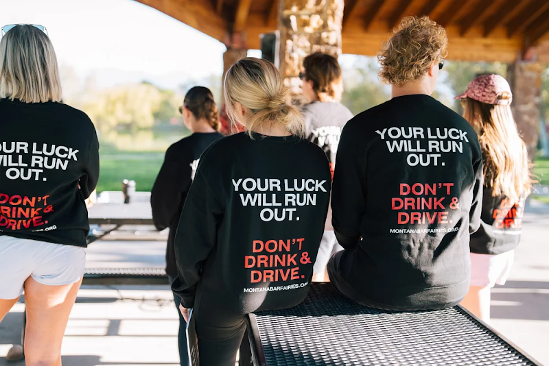

If you choose to leave your vehicle behind instead of driving under the influence in the Lake of the Ozarks, you might receive a surprise gift card from The Bar Fairies when you pick your car back up.
Each gift card is accompanied by a photo of someone who lost their life to a drunk driver.
The movement began in Montana in 2023 after Cali Seymour lost her brother Bobby, who was only 21 years old, to a drunk driver.
In three years since, The Bar Ferries have expanded to 12 chapters in seven states, and will be adding a chapter in Jefferson City, Missouri, soon.
Beyond leaving cards on windshields, the nonprofit provides community services, including grief outreach for families, partnerships with local bars to encourage safety, and DUI awareness campaigns. They also successfully advocated for the message of "Bobby's Law," which states that any driver who kills someone while having a blood alcohol level of .16 or higher is negligent and charged with aggravated vehicular homicide, carrying a minimum of three years in prison.
Looking ahead, the group hopes to launch a "Fairy Ferry" in Montana to ensure those who decide not to drive can get a free ride home.
To learn more or find a chapter near you, visit thebarfairies.org.